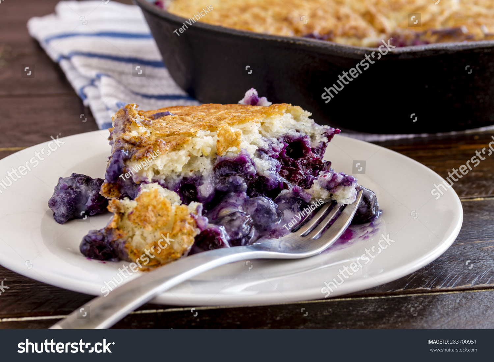

Easy Blueberry Cobbler

This is a recipe from someone's Grandma. Hope you enjoy it as much as I do. Best served with ice cream!
Ingredients
- Half a cup of butter
- 1 cup self-rising flour
- 1 cup white sugar
- 1 cup milk
- 4 cups fresh blueberries
- Tub of Ice Cream (Optional)
- Preheat oven to 350 degrees F (175 degrees C). Place butter in an 8-inch square baking dish.
- Melt butter in the preheating oven, about 5 minutes. Remove from oven.
- Mix flour, sugar, and milk in a bowl until combined; pour batter over melted butter. Scatter blueberries over batter.
- Bake in preheated oven until a toothpick inserted into the center comes out clean, about 1 hour.